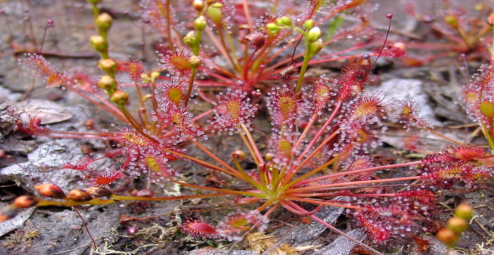
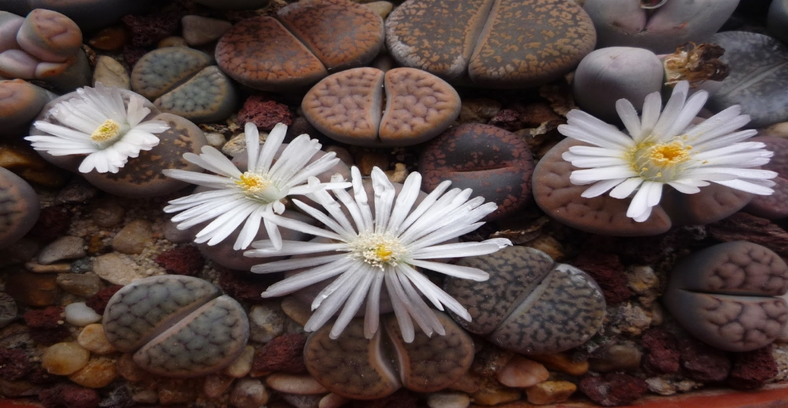

Las plantas suculentas, también conocidas como crasas, son aquellas capaces de almacenar agua suficiente para hacerlas resistir a las situaciones climáticas más adversas.

Droseras
Se la conoce como rocío del sol o hierba de la gota, debido a que sus hojas presentan unos pelos con unas pequeñas secreciones, tal como si fueran las gotas que aparecen por las mañanas, que atraen a los insectos.

Lithops
Estas curiosas plantas, también conocidas como 'piedras vivas' por el aspecto que adoptan para camuflarse con el entorno, tienen un ciclo de vida muy especial: crecen en invierno y primavera, reposan en verano y florecen en otoño.